format compact
clear variables
sigma = 0.1;
% Doubling time
T = log(2)/sigma
T = 6.9315
% Plot
t = linspace(0,15,100);
plot(t,10*exp(sigma*t)),ylim([0,50]),grid
% Plot and label lines: first doubling
line([T,T],[0,20],'Color','r','LineStyle','--')
line([0,T],[20,20],'Color','r','LineStyle','--')
hold on
plot(T,20,'o')
text(3,22,'First doubling')
% Plot and label lines: second doubling
plot(2*T,40,'o')
line([2*T,2*T],[0,40],'Color','g','LineStyle','--')
line([0,2*T],[40,40],'Color','g','LineStyle','--')
text(10,42,'Second doubling')
% Label graph
title('Exponential growth'),
ylabel('f(t) = 10*exp(0.1*t)'),xlabel('Time t [s]')
hold off
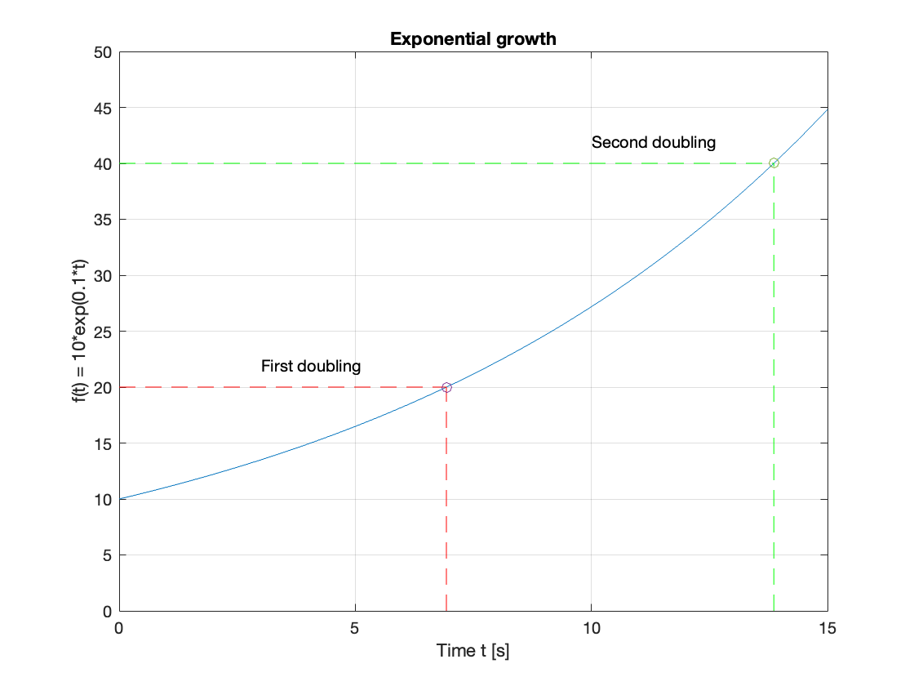
t = linspace(0,50,100);
R = 1e6; C = 10e-6;
sigma = -1/(R*C);
% Time constant and initial current
tau = 1/abs(sigma); i0 = 1/(R*C);
% Plot
plot(t,i0*exp(sigma*t)),grid
% Plot and label lines: time constant
line([tau,tau],[0,i0*exp(-1)],'Color','r','LineStyle','--')
line([0,tau],[i0*exp(-1),i0*exp(-1)],'Color','r','LineStyle','--')
text(tau+1,i0*exp(-1),'Time constant: 37% of i0 in 10 seconds')
hold on
plot(tau,i0*exp(-1),'o')
% Plot and label lines: 1% point
line([4.6*tau,4.6*tau],[0,0.01*i0],'Color','g','LineStyle','--')
line([0,4.6*tau],[0.01*i0,0.01*i0],'Color','g','LineStyle','--')
plot(4.6*tau,0.01*i0,'o')
text(32,0.01*i0+0.005,'1% of initial current in 46 seconds')
% Label graph
title('Exponential decay of current in an RC circuit'),
ylabel('Current i(t) [A]'),xlabel('Time t [s]')
hold off
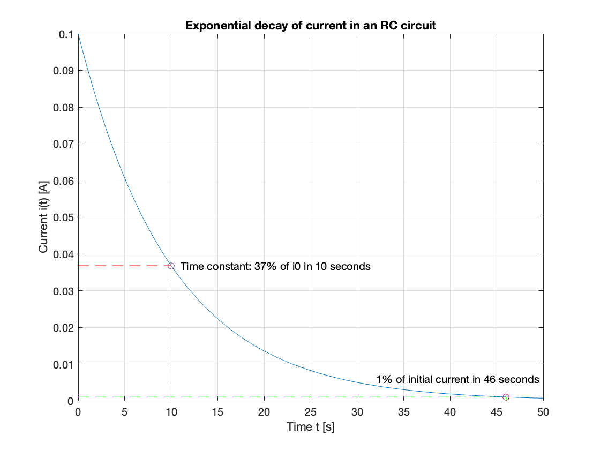
syms s t zeta omega_n K Y(s) y(t)
assume(t > 0)
Y(s) = K/(s^2 + 2*zeta*omega_n*s + omega_n^2)
\[Y(s) =\frac{K}{{\omega_n }^2 +2\,\zeta \,\omega_n \,s+s^2 }\]
y(t) = ilaplace(Y) % The impulse response in the time domain
\[y(t) =\frac{K\,{\mathrm{e}}^{-\omega_n \,t\,\zeta } \,\sin \left(\omega_n \,t\,\sqrt{1-\zeta^2 }\right)}{\omega_n \,\sqrt{1-\zeta^2 }}\]
syms Y_s(s) y_s(t)
zeta = 0.5; omega_n = 10;
X(s) = 1/s;
H(s) = omega_n^2/(s^2 + 2*zeta*omega_n*s + omega_n^2);
Y_s(s) = H(s)*X(s)
\[Y_s(s) =\frac{100}{s\,{\left(s^2 +10\,s+100\right)}}\]
% step response
y_s(t) = ilaplace(Y_s(s))
\[y_s(t) =1-{\mathrm{e}}^{-5\,t} \,{\left(\cos \left(5\,\sqrt{3}\,t\right)+\frac{\sqrt{3}\,\sin \left(5\,\sqrt{3}\,t\right)}{3}\right)}\]
fplot(y_s(t)*heaviside(t),[0,1.2]),ylim([0,1.2]),grid
xlabel('Time (seconds)'),ylabel('y_s(t)'),...
title('Step Response: Determined analytically')

sigma = zeta*omega_n;
omega = omega_n*sqrt(1 - zeta^2);
% Compute response using the formula
t = linspace(0,1.2,100);
yst = (1 - exp(-sigma*t).*(cos(omega*t)+(sigma/omega)*sin(omega*t)));
plot(t,yst),grid,...
xlabel('Time (seconds)'),ylabel('y_s(t)'),...
title('Step Response: Computed with formula')
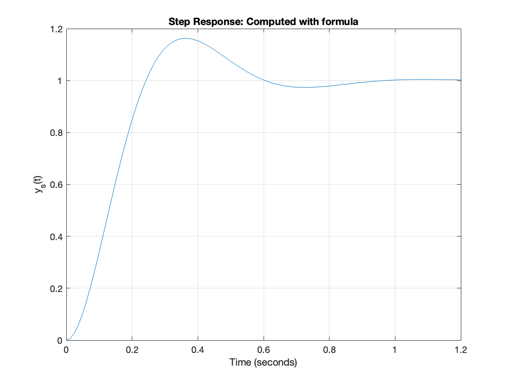
num = omega_n^2; den = [1 2*zeta*omega_n,omega_n^2];
Hs = tf(num,den)
Hs
=
100
----------------
s^2 + 10 s + 100
Continuous-time transfer function.
step(Hs),title('Step Response: Computed with tf function')
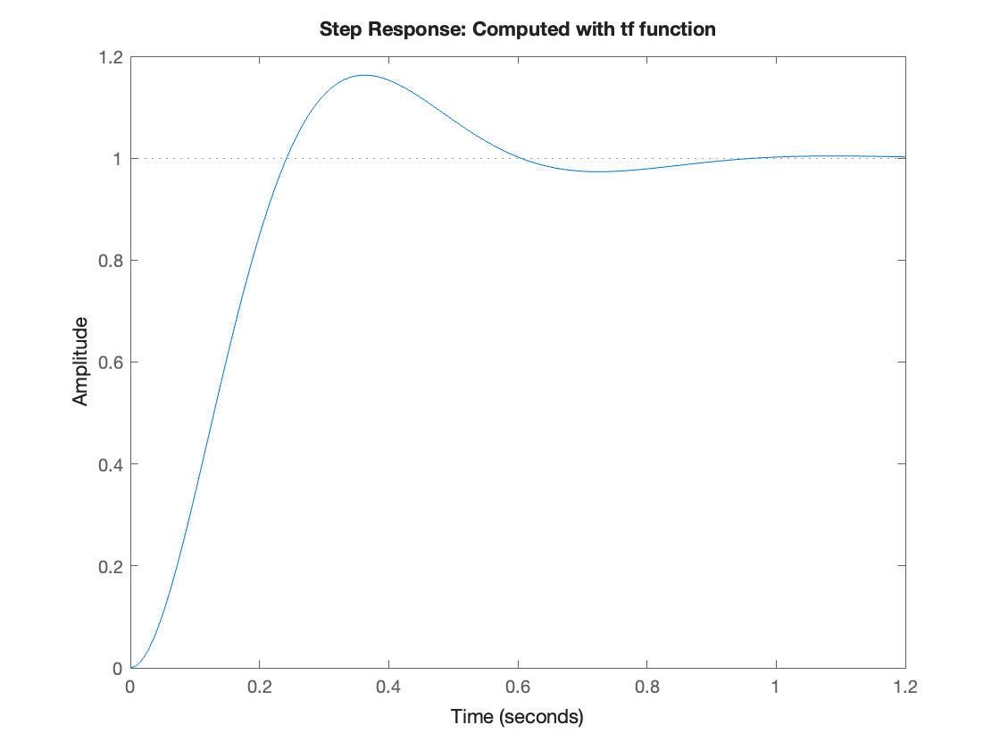
syms s t
zeta = 0.5; omega_n = 10;
H = omega_n^2/(s^2 + 2*zeta*omega_n*s + omega_n^2)
\[H =\frac{100}{s^2 +10\,s+100}\]
[num,den] = numden(H);
symbolicPoles = factor(den,'FactorMode','full') % FactorMode needed to reduce quadratic
\[symbolicPoles =\left(\begin{array}{cc}
s+5+5\,\sqrt{3}\,\mathrm{i} & s+5-5\,\sqrt{3}\,\mathrm{i}
\end{array}\right)\]
% Convert symbolic polynomials to numeric polynomials
n = sym2poly(num); d = sym2poly(den);
% Compute the roots
den_poles = roots(d)
den_poles = -5.0000 + 8.6603i -5.0000 - 8.6603i
Hs = tf(n,d);
poles = pole(Hs)
poles = -5.0000 + 8.6603i -5.0000 - 8.6603i
[wn,z] = damp(Hs)
wn = 2×1 double 10.0000 10.0000
z = 2×1 double
0.5000
0.5000
[wn,z,p] = damp(Hs)
wn = 2×1 double 10.0000 10.0000
z = 2×1 double
0.5000
0.5000
p = -5.0000 + 8.6603i -5.0000 - 8.6603i
step(Hs),line([0,0.1],[0.1,0.1]),line([0,0.25],[0.9,0.9])
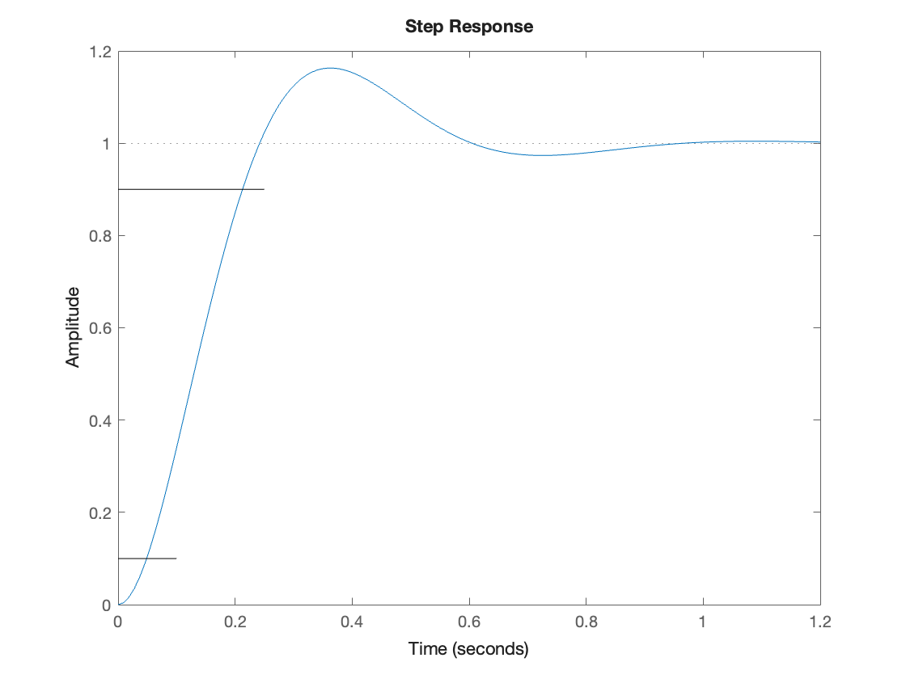
Ts = 4/(zeta*omega_n) % seconds
Ts = 0.8000
step(Hs),line([0,1.2],[1.02,1.02]),line([0,1.2],[0.98,0.98])
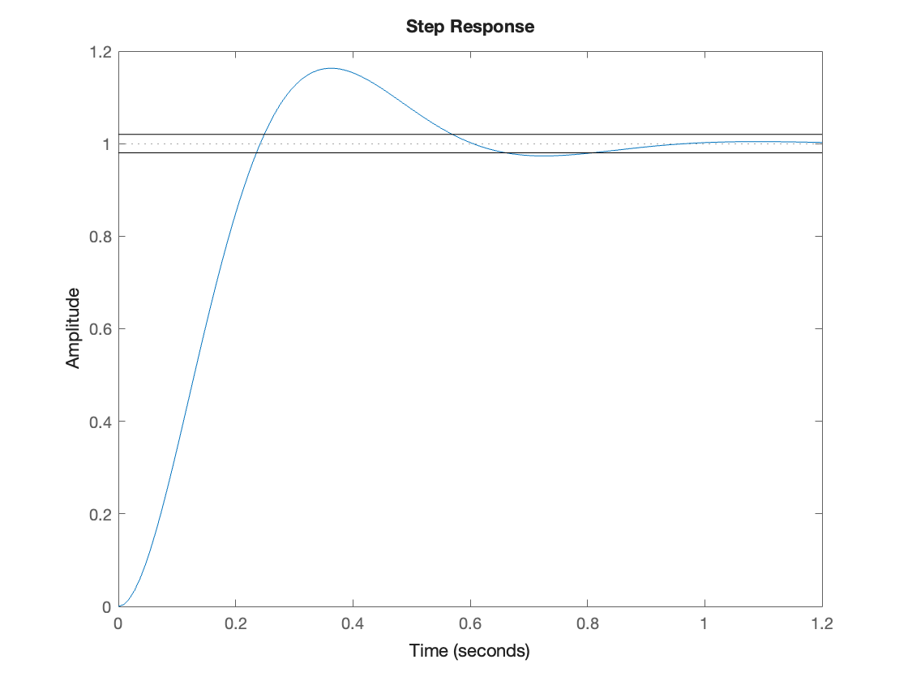
POS = exp(-zeta*pi/sqrt(1 - zeta^2))*100 % OS
POS = 16.3034
OS = 1 + POS/100; % OS
step(Hs),line([0,1.2],[OS,OS])
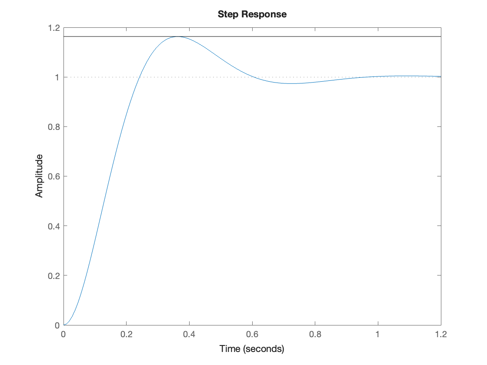
z = -log(POS/100)/sqrt(pi^2 + log(POS/100)^2)
z = 0.5000
Tp = pi/(omega_n*sqrt(1 - zeta^2))
Tp = 0.3628
step(Hs),line([Tp,Tp],[0,1.16304])
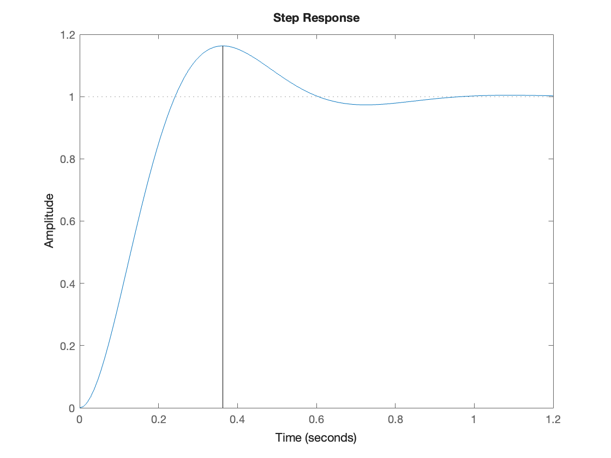
stepinfo(Hs)
ans = struct with fields:
RiseTime: 0.1639
TransientTime: 0.8076
SettlingTime: 0.8076
SettlingMin: 0.9315
SettlingMax: 1.1629
Overshoot: 16.2929
Undershoot: 0
Peak: 1.1629
PeakTime: 0.3592syms t
x_1 = -exp(-2*t)
x_2 = -0.1*t^2*cos(3*t + 5)
x_3 = x_1 + x_2
T = 2*pi/3; % Period of sinusoidal term
fplot(x_1,[0,3*T])
hold on
fplot(x_2,[0,3*T])
fplot(x_3,[0,3*T])
grid, title('Visualization of dominant poles from Exercise 16.1'),ylabel('x(t)')
legend('x_1(t)','x_2(t)','x_3(t)')
hold off
\[x_1 =-{\mathrm{e}}^{-2\,t}\]
\[x_2 =-\frac{t^2 \,\cos \left(3\,t+5\right)}{10}\]
\[x_3 =-{\mathrm{e}}^{-2\,t} -\frac{t^2 \,\cos \left(3\,t+5\right)}{10}\]
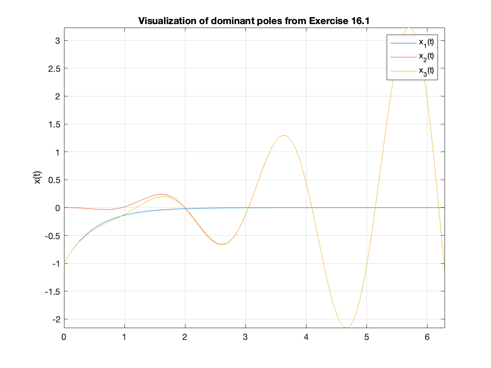
z = [-1.5; -3 - 3j; -3 + 3j];
p = [0; 1 + j; 1 - j; -1; -2 + 2j; -2 - 2j; -3];
% Define a transfer function in zero-pole-gain form
Fs = zpk(z,p,1)
Fs
=
(s+1.5) (s^2 + 6s + 18)
-------------------------------------------
s (s+1) (s+3) (s^2 - 2s + 2) (s^2 + 4s + 8)
Continuous-time zero/pole/gain model.
tf(Fs)
ans
=
s^3 + 7.5 s^2 + 27 s + 27
-----------------------------------------------------
s^7 + 6 s^6 + 13 s^5 + 6 s^4 - 10 s^3 + 40 s^2 + 48 s
Continuous-time transfer function.
pzmap(Fs),xlim([-4,1]),ylim([-4,4]),title('Pole zero map for Example 16.2')
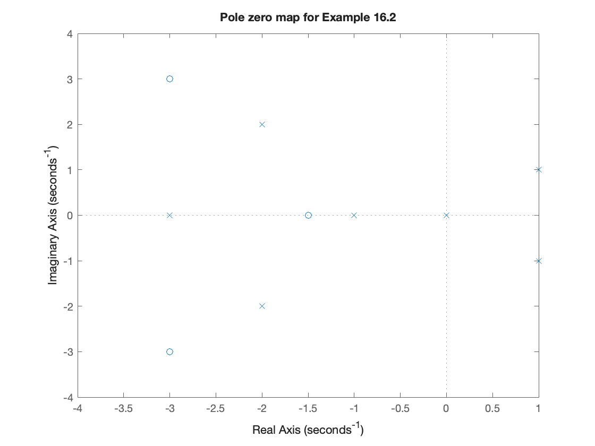
damp(Fs)
Pole Damping Frequency Time Constant
(rad/seconds) (seconds)
0.00e+00 -1.00e+00 0.00e+00 Inf
-1.00e+00 1.00e+00 1.00e+00 1.00e+00
1.00e+00 + 1.00e+00i -7.07e-01 1.41e+00 -1.00e+00
1.00e+00 - 1.00e+00i -7.07e-01 1.41e+00 -1.00e+00
-2.00e+00 + 2.00e+00i 7.07e-01 2.83e+00 5.00e-01
-2.00e+00 - 2.00e+00i 7.07e-01 2.83e+00 5.00e-01
-3.00e+00 1.00e+00 3.00e+00 3.33e-01
step(Fs)
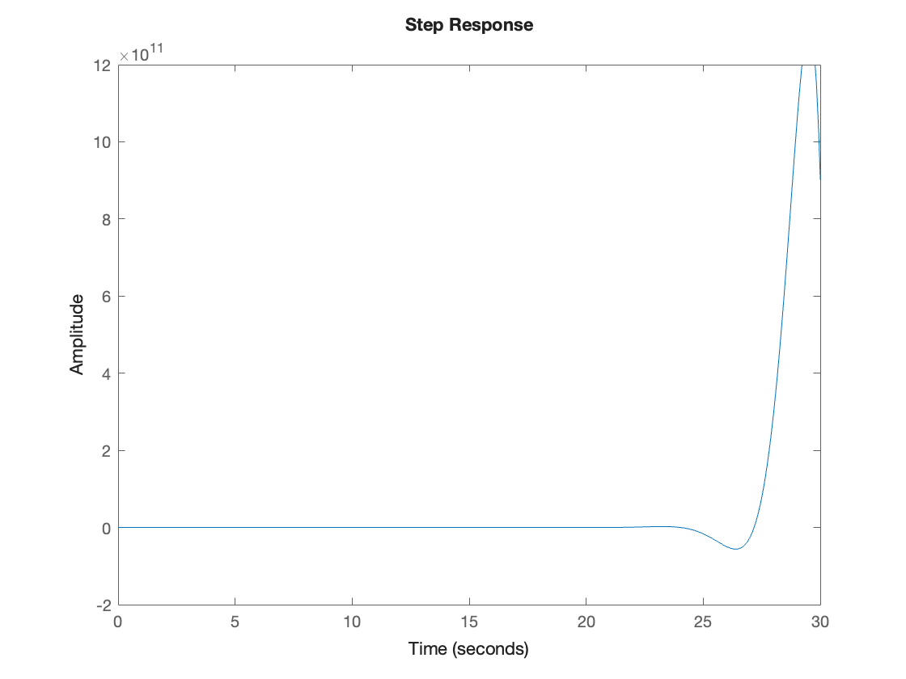
% Use these symbolic variables
syms m c k
% Replace the NaNs with your expressions
K = 1/m
omega_n = sqrt(k/m)
zeta = (c/m)/(2*omega_n)
\[K =\frac{1}{m}\]
\[omega_n =\sqrt{\frac{k}{m}}\]
\[zeta =\frac{c}{2\,m\,\sqrt{\frac{k}{m}}}\]
% Your solution here
poles = solve(s^2 + (c/m)*s + (k/m) == 0);
pplus = poles(1), pminus = poles(2)
\[pplus =-\frac{c-\sqrt{c^2 -4\,k\,m}}{2\,m}\]
\[pminus =-\frac{c+\sqrt{c^2 -4\,k\,m}}{2\,m}\]
k = 1; m = 1; c = 1;
Gs = tf(1/m, [1 c/m k/m])
Gs
=
1
-----------
s^2 + s + 1
Continuous-time transfer function.
step(Gs)
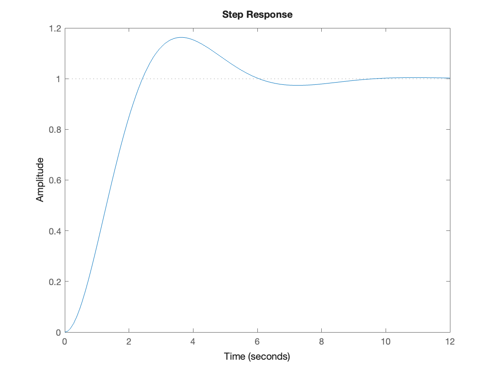
p = pole(Gs)
p = -0.5000 + 0.8660i -0.5000 - 0.8660i
[Wn,Z]=damp(Gs)
Wn = 2×1 double
1.0000
1.0000
Z = 2×1 double
0.5000
0.5000
stepinfo(Gs)
ans = struct with fields:
RiseTime: 1.6390
TransientTime: 8.0759
SettlingTime: 8.0759
SettlingMin: 0.9315
SettlingMax: 1.1629
Overshoot: 16.2929
Undershoot: 0
Peak: 1.1629
PeakTime: 3.5920